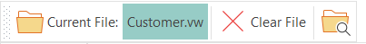

Toolbars

Open Workspace/Current Workspace button (Alt+W)
Click on the Open Workspace button and select an *.sws workspace file. Alternatively, you can press the down-arrow of the split button to select a previously opened workspace.
Note: The interface has been changed and the path is not shown any more to the right of the control. Instead you can hover the mouse over the file name and the full path will be displayed. This was made to save space.
Clear Workspace button (Ctrl+F5)
This clears both the selection of the workspace and the file, if one has been opened.
Workspace History button
Click to display a popup dialog where you can remove previously saved workspace history items.
Open Containing Folder button
This will open Windows Explorer for the selected workspace. If a file has been opened, it will be highlighted in Windows Explorer.

Open Source File button (Alt+O or Ctrl+O)
Only use this button if you would like to work on one file only and not an entire workspace. After a source file has been selected it will be displayed with full path to the right of the button.
Note: The interface has changes slightly and the path is not shown as displayed above. Instead you can hover the mouse over the file name and the full path will be displayed.
Clear Source File Button (F5)
Closes the open source file.

Refactor Mode radio button (Alt+F toggles between the two modes)
The tool can work in one of two modes. If the File radio button is selected, all work is done on a single selected source file. If the Workspace radio is selected all actions will be done on all workspace source files that matches the File extensions to parse drop down list from the Refactoring view (below the grid) and for all selected folders in the grid above it.
Save Changes button (Ctrl+S or F2)
Save changes made (if source file changes has been made in the editor.)
Undo Changes (Ctrl+Z)
Undo the last editor change
Unused Source Files (Alt+I)
Shows Unused Source Files dialog where unused files can be selected to be moved to the backup area.
Undo refactoring process
Attempts to undo the last refactoring process by copying back files from the DFRefactor_Backup folder structure to their original position.
Show Log File (Alt+L)
The statistics text that is shown in the dialog after you have clicked the Run Now is also saved to DFRefactoringLogfile.txt log file. It is saved in the workspace DFRefactor Backup sub folder.
Compare Tool button
Click to start the file comparison tool. This is an external program you need to have installed. You set up which program to use with the Program Settings button.
Starzen's DataFlex Source Explorer button
This is - just like the Compare Tool button, an external program that needs to be installed separately. You set it up from the Program Settings dialog.
Program Settings button
Pops up the Program Settings dialog where you can set various program settings.
Editor Settings button
Pops up the Editor Settings dialog where you can set all sorts of properties for the Scintilla editor that is used by the Editor view.
Theme Selector drop down
Use it to select a visual theme that changes the look & feel of the program.
About button
Displays a popup dialog with info about the program, including version and a list of the authors.
Help button
That would be this button. Note that there is also an on-line help available and it might be more recent than this help file. You need to click the down-arrow on the split help button to be able to select the on-line help.
Exit button
Ends the program.